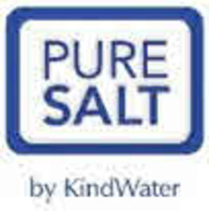
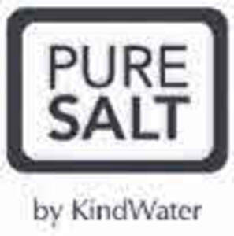

Trade Mark Journal No.2025/030 25 July 2025
UK00004235588 17 July 2025 (1,30,31)
Mark 1

Mark 2

- Class 1
- Filtering materials of chemical substances; Filtering materials of mineral substances; Mineral substances for use in filtering; Chemical compositions for water treatment; Chemical preparations for use in water softening; Chemical preparations for use in water purification; Chemical products for the treatment of drinking water; Chemical products for the treatment of water; Industrial salt for water softening; Industrial salt for water purification; Ion exchange resins; Ion exchange resins for use in water treatment; Water softening chemicals; Water softening preparations; Water softening substances; Industrial salts; Raw salt; Salt for de-icing; Grit salt for de-icing; Water treatment salt; Water softener salt; Salt for water treatment and softening, namely, Granular salt,Tablet salt, Swimming pool salt, Block salt, Rock salt, Vacuum salt, Sea salt; Chemical products for water treatment; water treatment tablets, salt tablets; Salt for use in the dyeing industry; Salt for use in the soap industry; Salt pellets for use in the dyeing industry; Salt pellets for use in the soap industry.
- Class 30
- Cooking salt; Edible salt; Table salt; Sea salt for cooking; Salt for preserving food; Food grade salt; Food grade sea salt; Edible salt, namely Fine salt, Microfine salt, Iodised salt; Salt (cooking-); Salt for cooking; Salt for flavouring food; Salt for food; Salt for preserving fish; Salt for preserving food; Salt pellets for preserving fish; Salt pellets for preserving food; Salt pellets for preserving foodstuffs; Salt (Cooking -); Salt for preserving foodstuffs.
- Class 31
- Raw and unprocessed agricultural salt; Agricultural salt; Salt for animals; Lumps of rock salt for licking by livestock; Salt licks; Salt for cattle.
KindWater Limited
Representative: Dummett Copp LLP